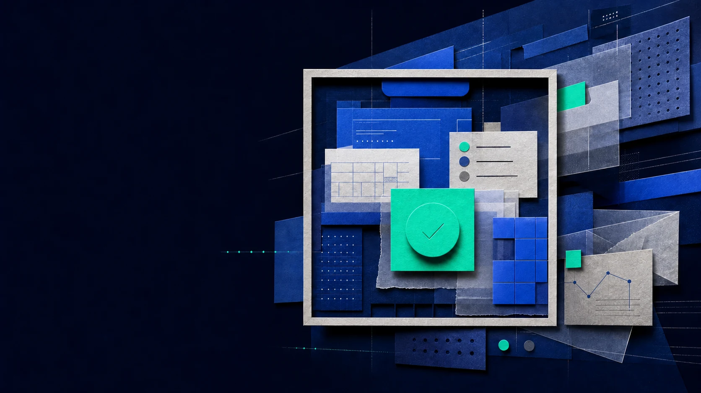
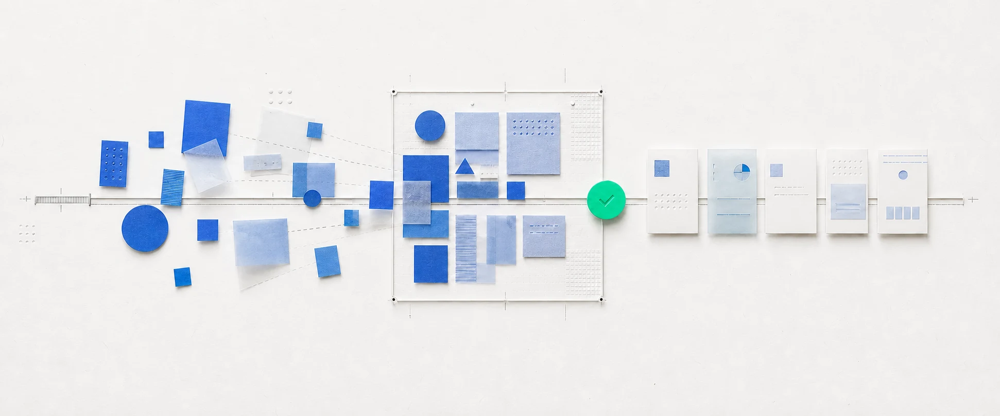

Designed software
Stable screens for known paths. Best when the work repeats.

The interface can change. Authority cannot. Enterprise GenUI assembles approved components around the task while the application keeps control of state, policy and action.
↓ Read the featureGenerative UI composes an approved interface for the task at hand. The application still owns the truth.
Fixed software is reliable but cannot anticipate every case. Chat is flexible but often hides state, evidence and available action. Generative UI keeps the flexibility while restoring a visible, checkable interface.
Stable screens for known paths. Best when the work repeats.
Flexible input, but state, evidence and possible actions can disappear inside the answer.
Approved components adapt to the task. The application retains authority.
What it is not: arbitrary code generation, a chatbot with cards, or a replacement for the design system, permission model or product architecture.
Choose a workflow where cases genuinely differ, actions are bounded, and a person or system can verify the outcome.
Contracts, escalations, policy exceptions, release risk and security findings.
Incidents, claims, requests, anomalies and operational exceptions.
Scenario comparison, assumption changes, evidence inspection and rationale.
Deployment, onboarding, entitlement, service options and workflow setup.
One governed result, composed for executive, operator, auditor or client.
Charts, filters, drill-downs, annotations and follow-up actions.

Do not generate a new application for every request. Compose a focused surface over one governed capability.
The surface proposes. The app makes the change.
The layout may regenerate when the job changes. Ordinary interaction should remain immediate, and the workflow must continue even if the surface disappears.
Structure and emphasis may regenerate when the intent, phase or material context changes enough to justify a new arrangement.
Require review when the action is consequential, hard to reverse or uncertain. Approval everywhere only creates another queue.
Summarize, draft, compare, rank, surface missing context, arrange evidence and recommend a next step.
Identity, permission, app state, deterministic rules, policy checks, evaluation, tool execution, logging and rollback.
Set goals, correct context, decide exceptions, approve high-impact action, override, reject, escalate and record rationale.
A reviewer should immediately see why the workflow paused, what is proposed, what supports it and which actions are available.
Test coverage is complete. The change introduces a new payment-provider dependency, and rollback rehearsal finished above the preferred recovery-time threshold.
The generated surface is only the visible layer. Identity, contracts, action control, audit and recovery remain application-owned.
Identity, navigation, history, global settings, help, recovery and the deterministic fallback preserve orientation.
Select a supported job, then declare its approved components, context, state references, actions, rules, semantics and limits.
Propose and validate a surface against the contract. Resolve app-owned state while keeping ordinary interaction local.
Map controls to declared actions. Recheck authorization, policy and evaluations at execution—not when the control is rendered.
Record request, evidence, versions, decisions, action and outcome. Support retry, cancel, rollback and safe stop.
Every action must be pre-registered, authorized at execution and audited. A schema does not remove privacy, isolation or data-minimization risk.
Use semantic primitives, deterministic fallbacks, keyboard and assistive-technology testing, responsive validation, recovery and representative users.
Each candidate has a variable case, a named human decision and a measurable outcome. Each also keeps a deterministic fallback.
Human decision: approve, edit, reject or escalate client-visible communication.
Human decision: ship, hold, narrow rollout or require remediation.
Human decision: accept, request revision or escalate to legal.
Human decision: assign, reprioritize, merge or trigger response.
Human decision: select a scenario, accept a trade-off or request analysis.
Baseline the real workflow, define authority, keep the deterministic path, then test bounded composition on production volume.
Exit: the normal path supports the complete task and recovery.
Exit: every action rechecks authorization and a fallback exists.
Exit: outcome, burden, error, accessibility, latency and cost beat the comparator.
Exit: ownership and version lifecycle work in production.
Define the unit, baseline, comparator, success threshold and stop condition before the pilot begins.
Completion, decision quality, business result, downstream error and rework.
Time to useful outcome, total cycle time, queue time, review SLA and handoffs.
Review rate, time per review, evidence requests, override and escalation.
Correction, abandonment, predictability, explanation use and fallback use.
Policy/eval pass rate, unauthorized attempts, audit completeness and rollback.
Semantic review, keyboard and screen-reader completion, zoom, reflow and testing.
Composition and local latency, cost, failure, schema rejection and fallback rate.
Capabilities first. Delivery forms second. Governance always.
Stable shell, bounded surface. Predictability and adaptation can coexist.
Verification beside generation. Model quality is only one part of production quality.
Choose one review-heavy workflow. Define the approved actions and the human decision. Keep the existing path. Then test whether an adaptive surface improves the production outcome.